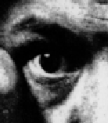

THEE ABYSS
THEE ABYSS
.

...because the only people for me are the mad
ones, the ones who are mad to live, mad to talk, mad to be saved, desirous
of everything at the same time, the ones who never yawn or say a commonplace
thing, but burn, burn, burn like fabulous yellow roman candles exploding
like spiders across the stars... Kerouac "On the Road"
Enter...